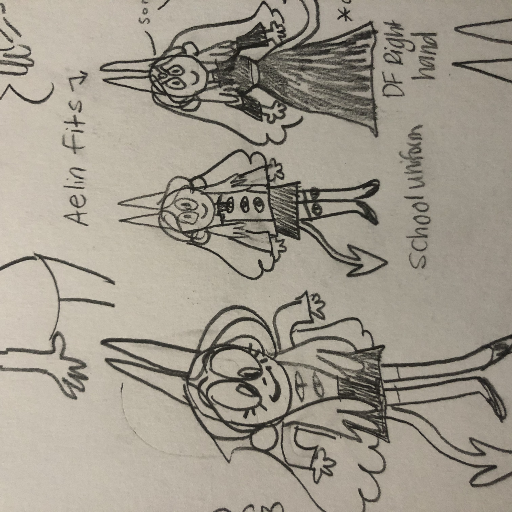

Bea, Rodney, and Rosie at this fire that appeared at my plaza randmly
an original vampire character that I made while I was really into twilight. She started as a youtuber joke character, but has evolved into a more nuanced specimen. That glum-looking little angel is her love interest, Mulciber. You can read a little more
about their lore and stuff here.
this is literally just doctor who fanart, but it is special because it is from requests I took on my instagram.
more doctor who fanart (can you tell who my favorite is?) but this time it is nice and colored with copics :)
nothing to see here, just me lamenting about acne as well as life drama. Seriously though, those hydrocolloid band-aids are amazing for zits.
here is lilly again, colored this time. The purple girl is my D&D character, Felix. She sometimes goes by a different name but Felix is the one that matters. I go through phases where I'll draw her all the time and then stop for months.
Here's a Lilly that I colored and finally made me resign to the fact that I am super bad at designing clothes. You can also see my doctor who ship biases potentially in this one, but for the official record I am a big fan of nine/rose
I cannot remember the context of this drawing to save my life... sorry ya'll
Here we go! the selfies! I love the way that I draw myself, and in particular that blue pencil is an underrated gem. I have good memories associated with these drawings as well, I drew them when I was with friends a bit ago and we played jackbox games.
some more blue pencil sketches from the game night, the dog ones are my friend's new dog named Rocco, he is quite sweet and named after an architectural style. I am personally a big fan of this dog because he is mellow and polite, and he has a funny face.
i draw these circles when i am feeling overwhelmed and need to draw, but have no idea what to draw. As you can see i messed a few of them up, but that's life.
This is a little doodle of me in an outfit that I like a lot, it is shapeless and goofy but it makes me feel super good. Unfortunately the shirt has toothpaste on it right now though...

some little outfit designs for Felix that are relevant to her lore (which I do not care to explain right now because it is a long story with multiple timelines).
1. I chose this font because it looks like my handwriting and it's cute, I may add some js font toggle options :))